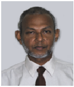
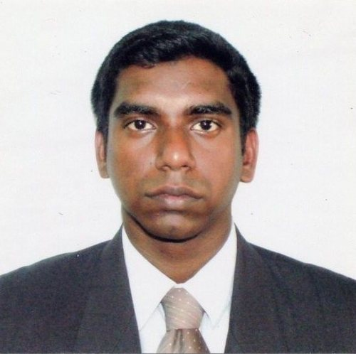
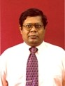
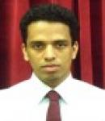
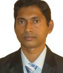
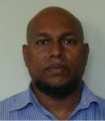
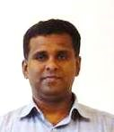
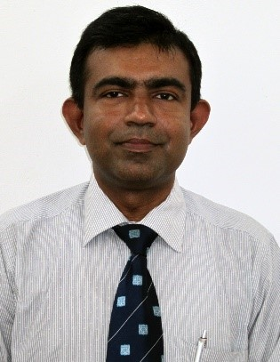
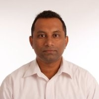

Moratuwa Engineering Research Conference - University of Moratuwa
mercon@uom.lk


|  |
General Chair Prof. W. P. S. Dias University of Moratuwa, Sri Lanka priyan@civil.mrt.ac.lk |
|  |
Program Chair Dr. H. M. N. Dilum Bandara University of Moratuwa, Sri Lanka dilumb@cse.mrt.ac.lk |
|  |
Program Co-Chair Dr. T.S.S. Jayawardena University of Moratuwa, Sri Lanka. jaya@uom.lk |
|  |
Registration/Financial Chair Dr. R.A.R.C. Gopura University of Moratuwa, Sri Lanka gopura@mech.mrt.ac.lk |
|  |
Publications Chair Dr. A. G. B. P. Jayasekara University of Moratuwa, Sri Lanka buddhika@elect.mrt.ac.lk |
|  |
Publications Chair Dr. Y.W.R. Amarasinghe University of Moratuwa, Sri Lanka ranama@uom.lk |
|  |
Local Organizing Chair Dr. Mahinsasa Narayana University of Moratuwa, Sri Lanka mahinsasa@uom.lk |
|  |
Local Organizing Chair Dr. U.P. Nawagamuwa University of Moratuwa, Sri Lanka udeni@civil.mrt.ac.lk |
|  |
Tutorials and Workshops Dr. L.W.P. Ruwan Udayanga University of Moratuwa, Sri Lanka ruwan@ent.mrt.ac.lk |
Track Chairs |
||
| Big Data and Software Engineering | Chair: | Prof. Gihan Dias, University of Moratuwa, Sri Lanka |
| Co-Chair: | Prof. Sanath Jayasena, University of Moratuwa, Sri Lanka | |
| Chemical and Process Engineering | Chair: | Prof. Britt Margrethe Halvorsen, Telemark University College, Norway |
| Co-Chair: | Dr. Mahinsasa Narayana, University of Moratuwa, Sri Lanka | |
| Civil and Environmental Engineering | Chair: | Prof. Junichi Koseki University of Tokyo, Japan |
| Co-Chair: | Dr. G.L.D.I. De Silva, University of Moratuwa, Sri Lanka | |
| Energy and Mechanical Engineering Systems | Chair: | Prof. Kazuo Kiguchi, Kyushu University, Japan |
| Co-Chair: | Dr. R.A.R.C. Gopura, University of Moratuwa, Sri Lanka | |
| Machine vision and Image Processing | Chair: | Prof. David Grayden, The University of Melbourne, Australia |
| Co-Chair: | Dr. Ranga Rodrigo (University of Moratuwa, Sri Lanka) | |
| Materials Science and Engineering | Chair: | Prof. Nanda Munasinghe, University of Moratuwa, Sri Lanka |
| Co-Chair: | Mr. Bandu Samarasekara, University of Moratuwa, Sri Lanka | |
| Micro/Nano Electro Mechanical Systems, Mechatronics, and Micromechatronics | Chair: | Dr. Dzung Viet Dao, Griffith School of Engineering, Australia |
| Dr. Dau Than Van, Sumitomo Chemicals Co., Ltd, Japan | ||
| Co-Chair: | Dr Y.W.R. Amarasinghe, University of Moratuwa, Sri Lanka | |
| Power Systems, Electrical Machines and High Voltage Engineering | Chair: | Dr. Dharshana Muthumuni, Manitoba HVDC Research Centre, Canada |
| Co-Chair: | Prof. Nalin Wickramarachchi, University of Moratuwa, Sri Lanka) | |
| Robotics and Control | Chair: | Prof. Zhang Tao, Tsinghua University, China |
| Prof. Satoru Goto, Saga University, Japan | ||
| Dr. Thrishantha Nanayakkara, King's College, London UK | ||
| Co-Chair: | Prof. Rohan Munasinghe, University of Moratuwa, Sri Lanka | |
| Telecommunication Systems | Chair: | Prof. Nandana Rajadewa, University of Oulu, Finland |
| Co-Chair: | Dr. Ruwan Udayanga, University of Moratuwa, Sri Lanka | |
| Textile and Apparel | Chair: | Dr. Gamini Lanarolle, University of Moratuwa, Sri Lanka |
| Co-Chair: | Dr. T.S.S. Jayawardena, University of Moratuwa, Sri Lanka | |
| Transport, Logistics and Technology Management | Chair: | Prof. Amal Kumarage, University of Moratuwa, Sri Lanka |
| Co-Chair: | Ms. Amali Wijekoon, University of Moratuwa, Sri Lanka | |
| Dr. S.U. Adikary, University of Moratuwa, Sri Lanka | DR. P.G. Rathnasiri, University of Moratuwa, Sri Lanka |
| Dr. S.U. Amarasinghe, University of Moratuwa, Sri Lanka | Dr. Ranga Rodrigo, University of Moratuwa, Sri Lanka |
| Prof. R. Attalage, University of Moratuwa, Sri Lanka | Dr. Jayathu Samarawickrama, University of Moratuwa, Sri Lanka |
| Dr. Singo Ashamota, Saitama University, Japan | Dr. Narishma k. Shashidhar, Sam Houston State University, USA |
| Dr. Prabath J. Binduhewa, University of Peradeniya | Dr. Indika Sigera, University of Moratuwa, Sri Lanka |
| Dr. Stephen Cahoon, Australian Maritime College, Australia | Dr. Anjula De Silva, University of Moratuwa, Sri Lanka |
| Prof. S.W.S.B. Dasanayake, University of Moratuwa, Sri Lanka | Emeritus Prof. Nimal de Silva, University of Moratuwa, Sri Lanka |
| Prof. P.G.R. Dharmarathne, University of Moratuwa, Sri Lanka | Dr. T. Sivakumar, University of Moratuwa, Sri Lanka |
| Dr. Nishantha Ekneligoda, Tuskegee University, USA | Dr. Thilak Siyabalapitiya, Resource Management Associates (pvt) Ltd, Sri Lanka |
| Dr. Shantha Fernando, University of Moratuwa, Sri Lanka | Mr. Hiranya Suriyarachchi, University of Manitoba, Canada |
| Dr. M.F.M. Firdhouse, University of Moratuwa, Sri Lanka | Dr. S. Thayaparan, University of Moratuwa, Sri Lanka |
| Mr. Chulaka Gunasekara, Syracuse University, Syracuse | Mr. Namal Thibbatuwawa, Queensland University of Technology, Australia |
| Dr. Lynne Hammond, London College of Fashion, UK | Dr. C.D. Tilakaratne, University of Peradeniya, Sri Lanka |
| Prof. Sisil Kumarawadu, University of Moratuwa, Sri Lanka | Ms. N. Tissera, SLINTEC, Sri Lanka |
| Mr. Lalin Kothalawala, University of Manitoba, Canada | Mr. S. Uggalla, Peak Gold mine, Australia |
| Mrs. Dilini Kulawansa, University of Moratuwa, Sri Lanka | Prof. Keerthi Walgama, University Of Peradeniya, Sri Lanka |
| Prof. Amal Kumarage, University of Moratuwa, Sri Lanka | Dr. S. Walpalage, University of Moratuwa, Sri Lanka |
| Dr. Kamal Laksiri, Ceylon Electricty Board, Sri Lanka | Mr. S. Weerawarnakula, University of Moratuwa, Sri Lanka |
| Dr. N.M.V.K. Liyanage, University of Moratuwa, Sri Lanka | Dr. G.L.D. Wickramasinghe, University of Moratuwa, Sri Lanka |
| Prof. George Mann, University of Moratuwa, Sri Lanka | Prof. Vathsala Wickramasinghe, University of Moratuwa, Sri Lanka |
| Dr. U. P. Navagamuwa, University of Moratuwa, Sri Lanka | Prof. N. K. Wickrarachchi, University of Moratuwa, Sri Lanka |
| Prof. Duminda Nishantha, Asia Pacific University, Japan | Prof. P. Wijekoon, University of Peradeniya, Sri Lanka |
| Prof. T.S.G. Peiris, University of Moratuwa, Sri Lanka | Prof. W.A. Wimalaweera, Open University, Sri Lanka |
| Prof. H. Y. R. Perera, University of Moratuwa, Sri Lanka | Dr. Dilruk Yahathugoda, MAS holdings, Sri Lanka |
| Prof. K. Perera, University of Moratuwa, Sri Lanka | Dr. Nihal Yatawara, Curtin University, Australia |
| Dr. G. Ranatunga, University of Moratuwa, Sri Lanka | Dr. Chitti Babu. B, VSB-Technical University of Ostrava, Czech Republic |
Engineering Research Unit, Faculty of Engineering, University of Moratuwa, Sri Lanka
Telephone: +94 11 265 0286 ext. 3044, Facsimile: +94 11 265 0622, Email: mercon@uom.lk
Developed by Dulaj Atapattu | Anuradha Wickramarachchi